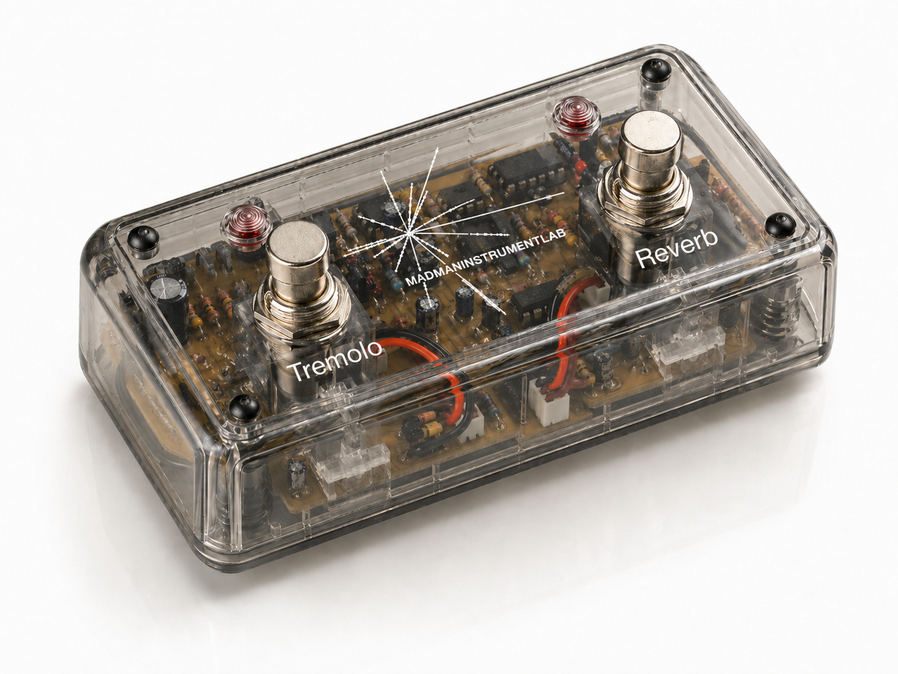

Hold / On-Off / Expression
A robust dual-switch architecture independently controls two effect circuits, with potential double-click support for new modes.
Engineered for musicians who demand reliable remote control and clear status feedback for their amplifier's built-in effects circuits. PRISONswitch simultaneously engages or disengages onboard tremolo and reverb while giving immediate visual confirmation during performance.

Transparent dual footswitch: tremolo, reverb, visible circuit enclosure.
A robust dual-switch architecture independently controls two effect circuits, with potential double-click support for new modes.
Hold both switches down to view pedal statistics, including switch count and held-time behavior.
Built around the Xtensa® 32-bit LX7 dual-core microprocessor with 2.4 GHz Wi-Fi and Bluetooth® 5 LE.
| Power Input | 9V or 12V standard pedal power supply, center negative |
|---|---|
| Target Power Draw | Targeting 200mA maximum current consumption |
| Microcontroller | Xtensa® 32-bit LX7 dual-core microprocessor (ESP32-S3 family) |
| Display | Fermion 1.51-inch OLED transparent display (blue, 128x64 pixels) |
| Connectivity | 1/4-inch mono TS or TRS cable compatibility |
| Durability | Designed to withstand a 30-year lifecycle based on typical band usage |
| Warranty | 15-year warranty |
Built for gear heads seeking high-quality effects, unique aesthetic design, premium build quality, and exclusive digital features.
Designed for players and producers who appreciate digital control, clean status feedback, and portfolio-level microcontroller architecture.